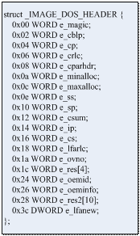

逆向工程技术初级实验
实验原理
1、逆向工程简述
软件逆向是计算机学科里一门重要的技术，通过对程序的逆向，可以对程序的内部进行探究，了解程序的机理和用途。逆向工程针对不同的程序采用不同的技术和方法，包括很多方面：如反汇编，反编译等等。在计算机安全，信息对抗领域，逆向技术是一项最基本也最重要的内家功。
反汇编是非常常用的一项逆向工程技术。那什么是反汇编呢？反汇编就是将机器语言转化成汇编语言的一个过程，主要用于对没有提供源代码的程序的逆向分析。通常，程序员都采用C、C++、Delphi等高级语言编写程序，后经过编译器编译链接后生成可被系统运行的可执行文件。而反汇编往往就是将这些可执行文件转换成可读的汇编语言程序的过程。
为什么对程序需要进行反汇编呢？主要是由于将可执行文件恢复成高级语言的难度极大，但高级语言执行时必会以机器语言的方式执行，可是机器语言不易读，而汇编语言和机器语言之间却存在很好的对应关系，所以为了搞清程序的具体情况，分析人员往往将程序转换为汇编语言来分析。通过反汇编我们可以对一个完全没有源代码的程序进行分析，了解程序的作用和目的，尤其是恶意代码分析方面，反汇编发挥着极大的作用。
反汇编的工具通常可分为静态反汇编器和动态反汇编器两种，静态反汇编器可对程序的代码进行解析还原，对变量等数据进行解析，一些工具还可以对变量的交叉引用也做出分析，大大方便了分析的工作。如IDA Pro、W32Dasm都是静态分析工具的代表。动态反汇编器不同于静态反汇编器的地方主要是可以支持用于调试程序，通过动态跟踪调试结合程序运行的结果可以使分析程序变得容易一些。比较有代表的工具有OllyDBG、SoftICE和WinDBG等等。
2、逆向分析技巧
逆向分析技术可通过分析反汇编代码来理解其代码功能，如各接口的数据结构等，然后用高级语言重新描述这段代码，逆向推出原软件的思路。这是一个非常重要的技能，需要扎实的编程功底和汇编知识。
逆向分析一定要养成给代码加注释的习惯，对代码的功能、局部变量、全局变量、输入参数和返回值做简要的说明，这样会非常有利于自己理清思路，把握程序的脉络。
3、函数
程序都是由不同功能的函数（子程序）组成，因此将分析的重点放在函数上是明智的，一个函数有如下几个部分：函数名、入口参数、返回值、函数功能。
函数名非常重要，因为许多高级语言的程序都可以从其源码的函数名理解它的功能。参数的确定也是很有难度的，这不仅要分析清楚参数接口的数据结构，还要结合函数代码的实现来确定。
在高级语言中，子程序依赖堆栈来传递参数。也就是说，调用代码会把传递给子程序的参数压入堆栈，子程序从堆栈中取出相应的值再使用，并且，调用代码或者被调用子函数必须有一方把堆栈指针修正到调用子函数前的状态。
表2-1 各编译器调用约定
|
约定类型 |
C |
SysCall |
StdCall |
Pascal |
Basic |
Fortan |
|
命名约定 |
名字前加下划线 |
|
名字前加下划线 |
名字大写 |
名字大写 |
名字大写 |
|
参数传递顺序 |
从右到左 |
从右到左 |
从右到左 |
从左到右 |
从左到右 |
从左到右 |
|
调用者平衡堆栈 |
是 |
|
|
|
|
|
假设例子代码中调用函数fun(parm1, parm2, parm3:int)，我们分别来看看C, Pascal和StdCall调用情况
表2-2 各编译器调用示例
|
C调用约定 |
Pascal调用约定 |
StdCall调用约定 |
|
push pama3;参数从右到左 push pama2 push pama1 call
fun add
esp |
push pama1;参数从左到右 push pama2 push pama3 call
fun;fun中的代码平衡 ;调用代码不需平衡 |
push pama3;参数从右到左 push pama2 push pama1 call
fun;fun中的代码平衡 ;调用代码不需平衡 |
可以清楚地看到，在参数入栈顺序上，C类型和StdCall类型是先把右边的参数先压入堆栈，而PASCAL类型是先把左边的参数压入堆栈。在堆栈平衡上，C类型是在调用者在使用call指令完成后，自行用add esp,8指令把8个字节的参数空间清除，而PASCAL和StdCall的调用者则不管这个事情，堆栈平衡的事情是由子程序用ret 8来实现的（ret指令后面加一个操作数表示在ret后把堆栈指针esp加上操作数）。
因为Win32约定的类型是StdCall，所以在程序中调用子程序或系统API后，不必自己来平衡堆栈，免去了很多麻烦。
3.1参数传递和局部变量
C,C++,BASIC,PASCAL等高级语言的函数执行过程基本都是依照如下的步骤
1 调用代码用PUSH和CALL指令将子函数执行的参数和子函数执行完毕时应该返回的地址压入堆栈
2 在子程序中使用EBP+偏移对子函数的参数寻址。
3 子程序使用RET或RETN指令返回。会让子函数执行完毕时从堆栈中取走第一步保存的应返回的地址并赋给EIP，让程序继续执行。
表2-3参数和返回地址传递
|
指令 |
堆栈结构 |
备注 |
|
|
|
;C调用规范 ;parm1,parm2:dword push parm2 push parm1 call
fun add
esp,8 |
低地址 |
add
esp,8指令的地址 |
程序刚执行完call fun但还没有执行fun子程序的代码时候，堆栈的情况。 |
|
|
parm1 |
||||
|
高地址 |
||||
|
parm2 |
||||
CALL指令除了调用函数外，还需要将CALL指令的下一条指令放入堆栈顶部。而RET和RETN的重要作用是到堆栈顶部取回值并作为子函数运行完的下一条指令执行。可见，CALL和RETN是配对的2个操作。
那RETN如何确保去堆栈顶部取出的地址是正确的CALL指令存入的下一条指令地址呢？所以子函数的执行整个过程必须实现堆栈平衡。也就是说在CALL指令执行后，到执行RETN指令前，整个过程堆栈的变化出栈和入栈的值是等同的。于是我们来看子函数的实现。
表2-4 子函数内部操作
|
;fun函数内部 push ebp mov ebp, esp sub esp, xx … add esp, xx pop ebp retn |
保存EBP 把新的栈顶值给EBP。那么EBP+偏移就是访问参数 分配空间，存放局部变量。那么EBP-偏移就是访问子函数局部变量 以下操作就是为了堆栈平衡。 可见堆栈平衡真的很重要，直到pop ebp执行完毕后，由于堆栈是平衡的，所有栈顶一定是子函数的返回地址 |
总的来说，实质上是CALL, RETN指令让子函数执行完毕后依然能够回到调用子程序的主流程上运行，而函数内的堆栈平衡原则则保证了存取返回地址的正确无误。
3.2函数返回值
如果函数有返回值，它的值会放在EAX或在某个参数里返回。如高级语言中代码 int value = fun(int a, int b)，value的值就是由eax寄存器来返回的。又如void fun(int a, int *b)
如果b是返回值，那么这个则是由参数里返回的。
4、循环
识别循环是一件较困难的事，尤其是程序在有多重循环的时候，这需要不断的积累。如果能确定某段代码是循环，那么找到计时器和循环判断条件最为重要，有一些情况是用ecx做计时器，控制循环也可以用类似 test eax, eax等指令，当然这是属于比较简单的情况。下面是一段简单的循环代码
xor ecx, ecx ;计数器清零
:00440000
inc ecx ;计数
…
cmp ecx, 05 ;循环4次
jbe 00440000 ;重复
5、全局变量
全局变量作用于整个程序，它放在全局变量的内存区，而局部变量则是放在函数的堆栈区，随着函数的退出，堆栈也相应退栈，所以局部变量只能作用于函数内部。
程序中存取全局变量有如下几种方式：
1 直接模式
mov eax, dword ptr [00540020]: 直接内存地址调用
2 间接模式
mov eax,
[esi+
间接的用基址加偏移的方式来调取全局变量
6、PE文件格式
Windows中可执行文件主要有NE、LE和PE等几种文件格式。NE格式和LE格式都是16位Windows操作系统下的格式，其中NE格式用于16位Window中的EXE可执行文件和DLL动态链接库文件，LE格式用于驱动程序。而PE格式是目前Windows平台上的主流可执行文件格式，应用于Win32以后的系统，如Windows95/98、Windows XP、Windows Vista和Windows 7。
PE文件格式大致可分为4个部分，如图3-1
1.DOS头（DOS header）
2.PE文件头（NT header）
3.节表（Section Table）
4.节（Section）

图3-1 PE文件格式框架结构
从图中可以看出，PE文件在文件和内存中是一个平面的地址空间，代码和数据都被合并在一起，组成了一个很大的结构。PE文件的开始是DOS头，紧接着就是PE格式的PE头（NT Header），PE头存储了PE文件非常多的重要的属性和结构，再接着就是节表和节。节表存储了节的各种信息，数据和代码就存在节中，通常称做代码节，数据节等。每个节会按照按照页边界对齐，并且节没有大小的限制，是一个连续的结构。有些文件在文件的末尾还有附加数据。
PE格式非常方便的一个地方就是在磁盘上的数据结构与在内存中的结构是一致的，如图3-2，操作系统将一个PE从文件装载到内存中，其实就是将一个PE文件的每一部分映射到内存地址空间中的过程，Windows加载器遍历PE文件并决定文件的哪一部分被映射，这种映射方式是将文件较高的偏移位置映射到较高的内存中。如图3-2。

图3-2 PE文件映射关系图
DOS头（IMAGE_DOS_HEADER）
从PE文件总体框架图可以看出，所有PE文件都会以一个简单的DOS MZ header开始。它的作用是一旦程序在DOS平台下执行，DOS就能识别出这是有效的执行体，接着运行之后的DOS stub。由于DOS 下不支持PE文件格式，操作将显示一个错误的提示：“This program cannot be run in MS-DOS mode”。以下是DOS头的定义，对于PE格式来说，最重要的是偏移3Ch处的e_lfanew字段，这个字段指出了真正的PE文件头（NT Header）的起始位置。

图3-3 IMAGE_DOS_HEADER结构图
PE文件头（IMAGE_NT_HEADERS）
PE头紧跟着DOS stub，是NT映像头（IMAGE_NT_HEADERS）的简称，包含了许多PE转载器需要用到的重要域。
PE头的数据结构定义如图3-5所示：

图3-5 IMAGE_NT_HEADERS结构
PE头分成了3部分，Signature、IMAGE_FILE_HEADER和IMAGE_OPTIONAL_HEADER，下面分别介绍3个结构
Signature是PE头开始的的标志，总是为十六进制值50 45 00 00 （ASCII字串表示：PE\0\0）,同时也是用于判断文件是否为PE文件的一个重要标志。
IMAGE_FILE_HEADER的包含的信息如表3-1：
表3-1 IMAGE_FILE_HEADER结构
|
IMAGE_FILE_HEADER |
说明 |
|
Machine |
可执行文件的CPU类型 |
|
节Section的数目 |
|
|
TimeDateStamp |
时间日期标记 |
|
PointerToSymbolTable |
COFF符号指针，这是程序调试信息 |
|
NumberOfSymbols |
符号数，即上以字段中所存放符号表的数目 |
|
SizeOfOptionalHeader |
可选头长度。 |
|
Characteristics |
文件属性 |
IMAGE_OPTIONAL_HEADER包含的信息如表3-2：
表3-2 IMAGE_OPTIONAL_HEADER结构
|
IMAGE_OPTIONAL_HEADER |
说明 |
|
Magic |
幻数，说明文件是ROM映像还是是普通的可执行的映像 |
|
MajorLinkerVersion |
链接程序的主版本号 |
|
MinorLinkerVersion |
链接程序的次版本号 |
|
SizeOfCode |
代码段大小 |
|
SizeOfInitializedData |
已初始化数据块的大小 |
|
SizeOfUninitializedData |
未初始化数据块的大小 |
|
AddressOfEntryPoint; |
程序开始执行的入口地址 |
|
BaseOfCode; |
代码段开始的相对偏移地址 |
|
BaseOfData; |
数据段开始的相对偏移地址 |
|
ImageBase; |
可执行文件默认装入的基地址 |
|
SectionAlignment; |
内存中节对齐值 |
|
FileAlignment; |
文件中节对齐值 |
|
MajorOperatingSystemVersion; |
要求操作系统的最低版本号的主版本号 |
|
MinorOperatingSystemVersion; |
要求操作系统的最低版本号的词版本号 |
|
MajorImageVersion; |
可执行文件的主版本号 |
|
MinorImageVersion; |
可执行文件的次版本号 |
|
MajorSubsystemVersion; |
要求最低子系统版本的主版本号 |
|
MinorSubsystemVersion; |
要求最低子系统版本的次版本号 |
|
Reserved |
保留 |
|
SizeOfImage; |
映像装入内存后的总尺寸 |
|
SizeOfHeaders; |
头和节表的大小 |
|
CheckSum; |
CRC校验和 |
|
Subsystem; |
程序使用的用户接口子系统 |
|
DllCharacteristics; |
DllMain()函数何时被调用。 |
|
SizeOfStackReserve; |
为线程保留的堆栈大小 |
|
SizeOfStackCommit; |
线程初始化时提交堆栈的大小 |
|
SizeOfHeapReserve; |
为进程的默认堆保留的内存 |
|
SizeOfHeapCommit; |
进程初始化的时提交默认堆的大小 |
|
LoaderFlags; |
与调试器有关 |
|
NumberOfRvaAndSizes; |
数据目录的项数 |
|
DataDirectory[16]; |
数据目录表 |
节表（IMAGE_SECTION_HEADER）
PE头与原始数据之间存在节表这样一个数据结构，节表包含每个节在映像中的信息。节表的结构如图3-6，多个节表连续排列，实际的节表的数量记录在IMAGE_FILE_HEADER的NumberOfSections项中。

图3-6 节表
节表包含了许多数据资料：
表3-3 节表（IMAGE_SECTION_HEADER）结构
|
IMAGE_SECTION_HEADER |
说明 |
|
Name |
8个字节的节名 |
|
VirtualSize |
节真实长度 |
|
VirtualAddress |
该节装载到内存中的相对偏移地址 |
|
SizeOfRawData |
该块在磁盘文件中的大小 |
|
PointerToRawData |
该块在磁盘文件中的偏移 |
|
PointerToRelocations |
OBJ文件表示本节重定位偏移 |
|
PointerToLinenumbers |
行号表在文件中的偏移 |
|
NumberOfRelocations |
OBJ文件表示本节在重定位表中的重定位数码 |
|
NumberOfLinenumbers |
该节在行号表中的行号数目 |
|
Characteristics |
节属性 |
在PE结构中有一些很典型的节需要我们学习，我们可以参考节名得知一些信息，但因为节名是可以修改的，所以不得完全依赖节名去定位导入表、导出表等。
表3-4 通用的节表名
|
节名 |
内容 |
说明 |
|
.text |
Executable code |
编译结束产生的节，它的内容全是指令代码 |
|
.data |
Initialized data |
初始化的数据库 |
|
.idata |
Import tables |
导入表。包含DLL的函数及数据信息 |
|
.edata |
Export tables |
导出表 |
|
.pdata |
Exception information |
异常信息 |
|
.rdata |
Read-only initialized data |
运行时只读数据 |
|
.xdata |
Exception information |
异常信息 |
|
.rsrc |
Resource |
资源。包含图标、菜单、位图 |
|
.reloc |
Relocation |
重定位节 |
|
.bss |
Uninialized data |
未初始化数据 |
|
.tls |
Thread local storage |
线程局部存储器 |